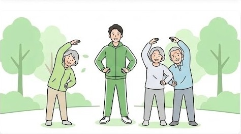
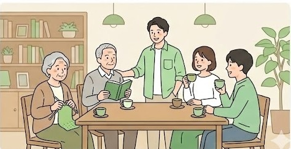

About
はじめまして

NPO法人で活動中。
健康運動指導士の資格を活かし、高齢者向けや地域サロンでの運動指導を主に行っています。
他にも、道の駅接客、高校寮監など、地域の方々と寄り添う仕事をしています。
現在はAI・Web技術を学びながら、WebサイトやアプリといったITの力で地域や人の役に立てる新しい形を模索中です。
About
NPO法人で活動中。
健康運動指導士の資格を活かし、高齢者向けや地域サロンでの運動指導を主に行っています。
他にも、道の駅接客、高校寮監など、地域の方々と寄り添う仕事をしています。
現在はAI・Web技術を学びながら、WebサイトやアプリといったITの力で地域や人の役に立てる新しい形を模索中です。
Service
健康の専門知識と、学び続けるIT技術を組み合わせて活動しています。


03
HTML・CSSを習得し、Netlifyでサイトを公開。ChatGPTなどのAIツールを日常的に活用しながら、Webサイト・アプリ制作に向けて着実に学習を進めています。
制作物を見る →Works
Web・AI学習のなかで取り組んできた制作・実践の記録です。
01
HTML・CSSで自分のプロフィールサイトを制作し、Netlifyで公開。デプロイまでの一連の流れを経験しました。
02
ChatGPTやCursorを使って、学習効率化や文章作成、コード補助などを実践。「AIをどう使えば仕事に活かせるか」を日々研究中です。
03
将来的にWebサイト制作やアプリ開発ができるよう、基礎から着実にスキルを積み上げています。
Activities
地域に根ざしたさまざまな現場で、人と向き合う経験を積んできました。
地域の健康支援や福祉活動を行うNPO法人の一員として活動中。多人数への運動指導や、地域の方々とのコミュニティ形成に携わっています。
高齢者の方々を対象に、体の機能維持・転倒予防・生活の質向上を目的とした運動プログラムを提供しています。
油圧マシンを活用したサーキットトレーニング形式の運動教室を担当。幅広い年齢層の方が安全に取り組める指導を行っています。
地域の方々が集まるサロンで、体操・ストレッチ・軽運動などを取り入れた活動を実施。健康意識の向上と居場所づくりに貢献しています。
地域の玄関口である道の駅での接客を担当。地元の魅力を来訪者に伝えながら、地域活性化の一端を担っています。
高校の寮監として、学生の生活支援・生活指導を担当。若者の自立と成長をそばで支える経験をしています。